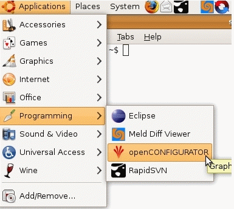
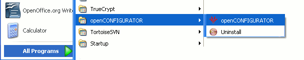

Launch
Linux
From command prompt:
Go to the command prompt
To launch, type openCONFIGURATOR
From GUI:
Go to Applications> Programming
Click on 'openCONFIGURATOR'

Windows
Go to Start Menu > All Programs > openCONFIGURATOR
Click on openCONFIGURATOR
